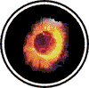

|

|
>> Содержание / Список кланов /
  Elementalies Elementalies
Мы вступили в этот мир также как вступают в него все. Мы ворвались в него в тот самый миг, когда Тьма выплеснулась из границ ночи, и изо всех вскрывшихся язв заструился черный яд. Сумерки сгущались перед нами. И когда солнце догорало свой час над горизонтом, тогда кровь стала миру пурпурной каймой, и обретающий глубину ореол Ангела Тьмы воззвал к жизни нас. То было знаком нашего рождения. И он отобразился на нашей эмблеме.
Происходящие от Темного начала, взлелеянные нашим создателем, мы устремились в трещины, паутиной испещрившие древние преграды, отделявшие нас от вожделенной цели - мира, самонадеянно именующего себя творением Мироздателя. Мы смешались с черной ночью и стали частью Вихря Тьмы, порой сокрушающего, как молот, а порой жалящего, как змея.
Действуя так, они видят то, что хотят видеть, но чувствуют, что время их истекло, и не могут поверить этому. Легионы тьмы растут. Они расправляют свои антрацитовые крылья готовые поглотить всё пространство. И уже очевидны первые успехи, и так будет дальше, от человека к человеку, от города к городу.
С наших плеч, облаченных в тяжелые доспехи ответственности за победоносные действия, ниспадает изящная мантия дипломатии, скрепленная у самого горла фибулой тёмного договора.
Багровые отметины, оставленные нами, вопят о том, что мы явились в сей мир во всеоружии. Совершенная сталь наших клинков, отточенные заклинания рождены в лучших кузницах и библиотеках Тьмы безукоризненно рассекают свет Ангелов.
Нас толкает вперед неутолимый голод наших ненасытных, пульсирующих в одном ритме с Тьмой, душах, и удушающая жажда побед над светом. И венчает наш безудержный порыв абсолютная любовь к Тьме. Мы знаем, - все силы Тьмы сплотятся за нашими спинами для решающего броска, и только ожидают наших первых успехов. Высший наш апостол тьмы, обучавший нас тактике и стратегии, неотрывно следит за каждым шагом своих учеников. И с высот своего трона он направляет в цель наши удары, делая их неотразимыми и незнающими жалости. Обладая мириадами изощренных способов выполнения его воли, мы, если понадобится, применим их все для достижения Его победы.
Мы сходимся на ристалищах с ангелами, и их белые перья покрывали просторы мироздания, подобно снегу. Мы завоевали истинному нашему ангелу легионы отверженных душ, и громим полки светлой армии.
Мы вдыхаем в души людей пламя свободы и независимости. Мы восхищаемся, видя, как мятежные сыны становятся сынами Тьмы, и причисляем их к растущим легионам, рвущимся в бой.
Процеживая мир вязких принципов и идеалов света, мы соберем воедино рассеянные силы Тьмы в безжалостную хватку стальных челюстей. Мы призовем под наши знамена непобедимую армию из тех людей, что сражаются не за мирские блага, не за милосердие, а за право сражаться и отдать свои души за торжество тёмной истинной справедливости. У нас есть ключи от всех городов, кроме обитых овчиной врат Ангельского города, но уже готовится таран с сокрушающей головой вепря против этого оплота света. Против этого ключа бессильны любые преграды...
Мощь нашей эпохи - Эпохи Тьмы неотвратима. Она застыла на мгновение в потоках ядовитых испарений, поднимающихся непроницаемой стеной от просторов мироздания, того места, где благодаря звону золота и благ подвержены порче как человеческие души, так и святость ангелов.
Мы ожидаем, вглядываясь во Тьму. Мы опираемся на щиты вверенных нам принципов, занимая город за городом. Смотрите, небеса густеют, ангельская твердь трещит по швам под тяжестью скопившихся там ангелов, полыхает огнями и молниями, рвётся от давящих изнутри противоречий. Апофеоз распада достигает своего пика и мы должны внести свой вклад в души людей находящиеся в свете сумерек и колеблющихся в выборе пути...
Официальный сайт клана: http://www.elementalies.com/
|
 |
|